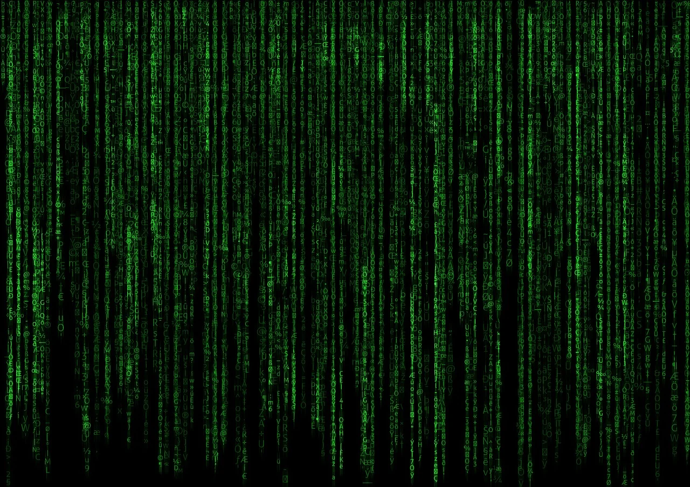

About Me!
Welcome to my personal website! Here's a little bit about me:
- Location: Los Angeles, California
- Coding: I started my coding journey with a lot of enthusiasm but also with a realization that mastering coding takes time and dedication. While I haven't reached the level of mastery I aspire to, I'm deeply passionate about learning and improving my coding skills every day. I believe that coding is not just about writing lines of code; it's about problem-solving, creativity, and continuous learning. I'm committed to exploring new technologies, tackling challenging problems, and building projects that push me out of my comfort zone. Every coding challenge I encounter is an opportunity to grow and become a better developer. I'm excited about the endless possibilities that coding offers and I'm determined to make the most of them.
- Hobbies: Ever since I can remember, I've had a passion for collecting sneakers. It's not just about the shoes themselves, but the stories and culture that surround them. Each pair in my collection represents a unique design, a moment in sneaker history, or a personal memory. Building my shoe collection has become more than just a hobby; it's a journey of exploration and discovery. My favorite brand, Nike, has played a significant role in shaping my passion for sneakers. Their innovative designs, commitment to quality, and influence on sneaker culture resonate with me on a deep level. Whether it's hunting for rare releases, learning about the latest trends, or connecting with other sneaker enthusiasts, I'm constantly immersed in the world of sneakers. It's a hobby that brings me joy, inspiration, and endless opportunities for creativity.
- Interests: Delving into the world of documentaries is one of my greatest pleasures. There's something captivating about the way they shed light on different aspects of life, from history and science to art and culture. Documentaries serve as windows into the human experience, allowing me to explore new perspectives, gain insights into diverse cultures, and deepen my understanding of the world around me. Whether it's unraveling the mysteries of the universe, unraveling the complexities of human behavior, or unraveling the rich tapestry of global history, documentaries offer a wealth of knowledge and inspiration. I find myself drawn to topics that challenge conventional wisdom, spark meaningful conversations, and ignite my curiosity. From thought-provoking true crime stories to eye-opening nature documentaries, there's always something new to discover and learn. It's a journey of enlightenment and discovery that never fails to fascinate and inspire me.
- Fun Fact: When I'm not immersed in the world of coding and documentaries, you can often find me on the basketball court, dribbling, shooting hoops, and enjoying the thrill of the game. Basketball has been a passion of mine since childhood, and it's more than just a sport to me—it's a source of joy, camaraderie, and personal growth. Whether I'm playing a pickup game with friends or shooting hoops alone, the rhythmic sound of the ball bouncing, the adrenaline rush of making a shot, and the sense of teamwork and competition all combine to create an exhilarating experience. Basketball not only keeps me active and fit but also teaches me valuable lessons about discipline, perseverance, and teamwork. It's a sport that brings people together, transcending barriers of age, background, and culture, and fostering connections that last a lifetime. So, the next time you see me with a basketball in hand, feel free to join in the fun and shoot some hoops together!
Interests
- Learning coding at Nucamp
- Listening to music
- Going to the movies
- Playing basketball
